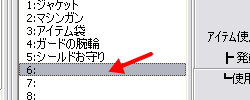
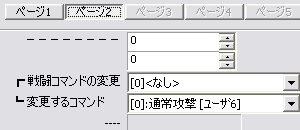

ユーザデータベース
右のようなウィンドウが表示されます。

【目標】
新しくアイテム（防具）を増やします。
ここでは、新しく防具を１つ作成します。
| 【1】 ユーザデータベース 右のようなウィンドウが表示されます。 |
|
| 【2】 ウィンドウが開いた直後は 「タイプ」が「技能」になっています。 「4:防具」をクリックして下さい |
|
| 【3】 「データ」の空いているところを クリックして下さい |
 |
| 【4】 「ページ１」の各項目を 入力して下さい ここでは以下の項目を 入力しています。 ・防具の名前 ・説明 ・装備のタイプ ・ｱｲﾃﾑ使用で特殊技能？ ・発動する特殊技能 ・ＭａｘＨＰ変化値 （ＨＰが１０増えます） ・防御力増減 （防御力が１０増えます） ・回避率増減 （回避率が２０％増えます） ・販売価格 （０＝売れません） ※入力値はサンプルゲームの 「青い服」を参考にしています ※分からない項目は サンプルゲームの防具を 真似してみましょう |
|
| 【5】 「ページ２」の各項目を 入力して下さい ここでは何も変更 していません |
 |
【6】
更新ボタンかＯＫボタンを押して下さい。
新しい防具が保存されました。
＜執筆者：さくらば結城＞